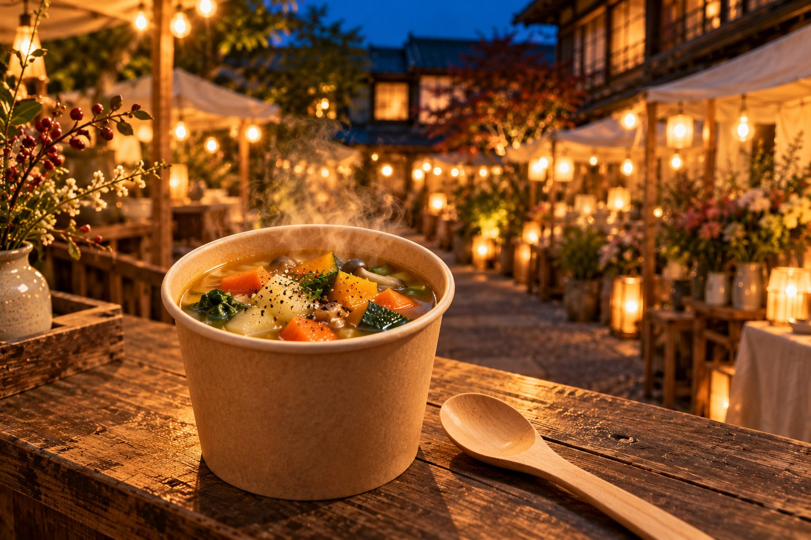
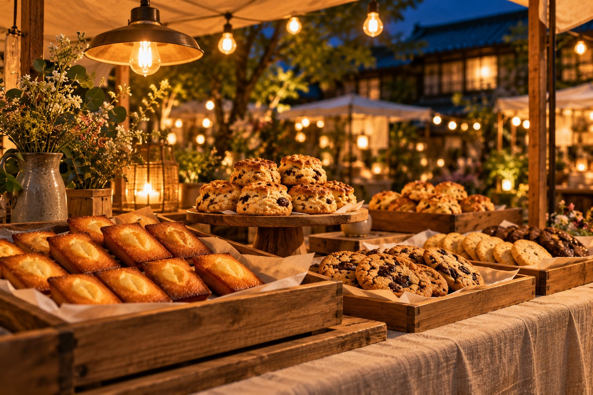
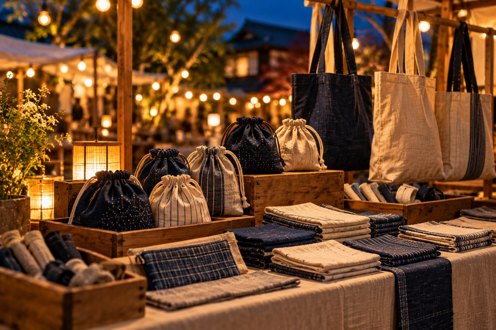
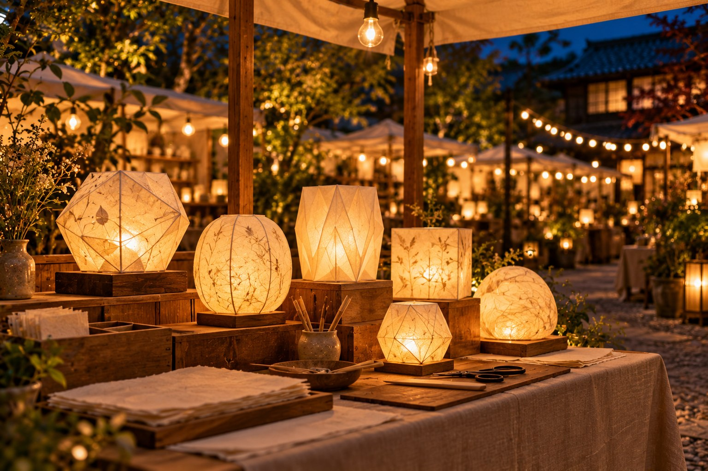
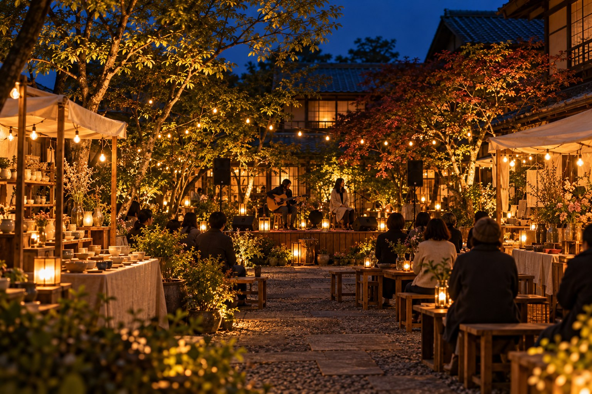

食 季節のスープ
まどべの台所
根菜の甘みをゆっくり引き出したスープと、小さなパン。夕方のお腹に、あたたかなひと皿。
スープ・軽食6組の出店者・出演者。カテゴリを選んで、気になる一組を見つけよう。
すべての出店者 6件を表示

食 季節のスープ
根菜の甘みをゆっくり引き出したスープと、小さなパン。夕方のお腹に、あたたかなひと皿。
スープ・軽食
食 焼き菓子
香ばしいフィナンシェ、ざくっとしたクッキー、ほろりとほどけるスコーン。明日の楽しみにも、ひと包み。
焼き菓子
工芸 うつわ
すこしずつ違う、土の色と手ざわり。毎日の食卓になじむ、小さな器を並べます。
陶のうつわ
工芸 布小物
リネンのポーチや小さな敷き布。使うほどにやわらかくなる、暮らしの道具。
布小物
体験 紙の灯り
紙を折り、好きなかたちの小さな灯りをつくる時間。予約不要の制作体験という設定です。
紙の灯りづくり
音楽 アコースティック
ギターと、やわらかな歌声。夕方のざわめきに溶けこむ、広場のための音楽。
ライブ / 17:30・19:00出店者・出演者はすべて架空の設定です。写真はイメージで、実際の商品・人物を示しません。